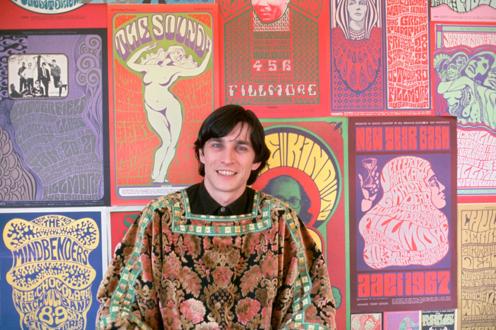
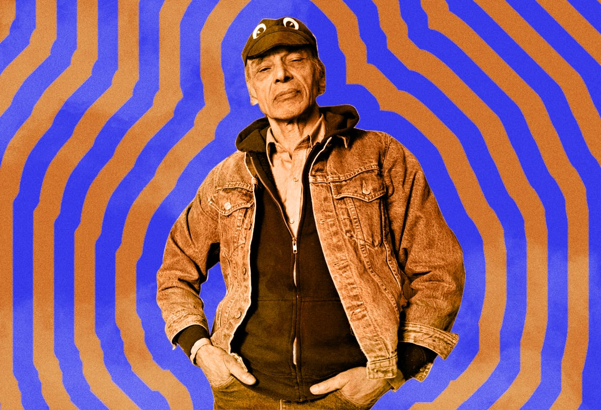
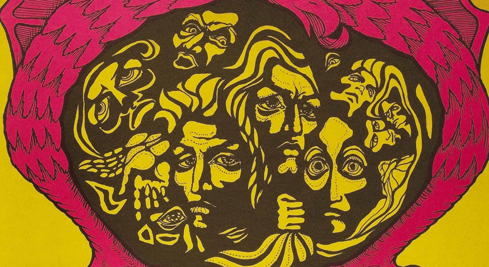
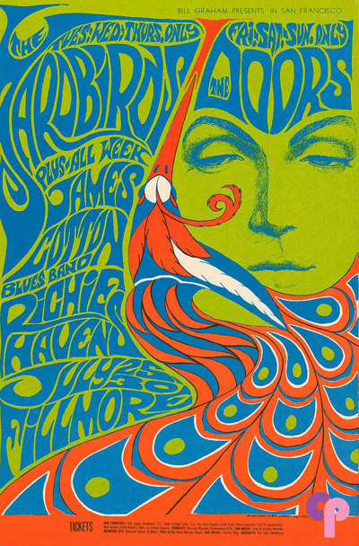

Psychedelic Art was a graphic art form that created visual art inspired by the experience of psychedelic drugs and hallucinations. The art typically features vivid colors, curvilinear shapes and animations simulating psychedelic trips. These artworks featured an excessive use of colour to depict the inner distorted and surreal world of the psyche. This psychedelic art refers to creations from the late 60’s which would portray and simulate what it was like to take drugs, such as LSD, through visual representation for all. On this website, you will discover the major contributors to this movement, the origins and the main characteristics of 60's Psychedelic art.
List of Major Contributors
- Wes Wilson (1937-2020)
- Victor Moscosco (1936-)
- Peter Max (1937-)
- Bonnie MacLean (1939-2020)
- Stanley “Mouse” Miller (1940-)
- Rick Griffith (1944-1991)
Wes Wilson (1937-2020)

Wes Wilson is considered to be one of the most well-known American
artists from the psychedelic art movement period for his posters.
He is best known for creating the “psychedelic font” in 1966. This
font consisted of making the letters look like they were melting
and moving. He is referred to as the Father of Rock Posters. He was inspired by Art Nouveau and used his knowledge of promotional art to create his first psychedelic posters. Since then, he has had the honour of being titled the father of the rock poster.
More Information on Wes Wilson!
Victor Moscoso (1936-)

Victor Moscoso is a Spanish artist. He was a trained graphic
designer that took elements from pop art and Art nouveau. He used
the concept of radiating and vibrating colors. These colors were
created by taking colors from the opposite end of the color wheel
where each one had an equal value (dark to light) and intensity
(brightness). This helped achieve the psychedelic effect that the
drugs would create (or the ‘trip’).
More Information on Victor Moscoso!
Origins

The origins of Psychedelic Art relate back to the discovery of LSD
by Albert Hofmann back in 1943. While studying the drug, he
accidentally absorbed it and discovered its side effects. The
developpement of psychedelic drugs helped artists realize their
maximum creative potential and explore this new form of so called
“trippy” art. The use of LSD was at its peak in the 60’s allowing
the artists to visual represent hallucinatory experiences.
Characteristics

Artworks using this Psychedelic aesthetic featured many key
characteristics. The first big element is the use of intensely
contrasting colors that had the ability to make the viewer’s eye
light up after seeing the work. This is what makes the link to a
mind-altering trip one gets of LSD obvious. The second major
characteristic was the unique look of the melting lettering in
motion. The last key element is the use of curve, curvilinear shapes
and multicolored swirls which would create a kaleidoscopic effect.
Juxtaposition of these shapes and lines was also important because
it allowed the artists to create optical illusions.